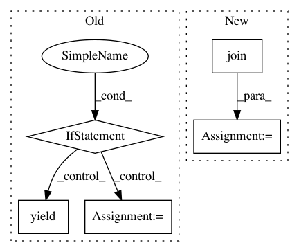

6ff2e7c602123787c3b0061466ab5bb8663eae81,pandas/_testing/contexts.py,,ensure_clean,#Any#Any#,76
Before Change
kwargs["suffix"] = filename
if return_filelike:
f = tempfile.TemporaryFile(**kwargs)
try:
yield f
finally:
f.close()
else:
// Don"t generate tempfile if using a path with directory specified.
if len(os.path.dirname(filename)):
raise ValueError("Can"t pass a qualified name to ensure_clean()")
try:
fd, filename = tempfile.mkstemp(**kwargs)
except UnicodeEncodeError:
import pytest
pytest.skip("no unicode file names on this system")
try:
yield filename
finally:
try:
os.close(fd)
except OSError:
print(f"Couldn"t close file descriptor: {fd} (file: {filename})")
try:
if os.path.exists(filename):
os.remove(filename)
except OSError as e:
print(f"Exception on removing file: {e}")
@contextmanager
def ensure_clean_dir():
Get a temporary directory path and agrees to remove on close.
After Change
if filename is None:
filename = ""
filename = (
"".join(random.choices(string.ascii_letters + string.digits, k=30)) + filename
)
path = folder / filename
path.touch()
In pattern: SUPERPATTERN
Frequency: 3
Non-data size: 5
Instances
Project Name: pandas-dev/pandas
Commit Name: 6ff2e7c602123787c3b0061466ab5bb8663eae81
Time: 2021-01-18
Author: twoertwein@users.noreply.github.com
File Name: pandas/_testing/contexts.py
Class Name:
Method Name: ensure_clean
Project Name: autorope/donkeycar
Commit Name: 558cf909ff79341e699cf872082231f83f4cdc50
Time: 2017-02-08
Author: wroscoe@gmail.com
File Name: donkey/remotes.py
Class Name: CameraMJPEGHandler
Method Name: get
Project Name: HazyResearch/fonduer
Commit Name: 0de3c091c75e36ffb4c12a2048110df37cafb644
Time: 2018-09-20
Author: lwhsiao@stanford.edu
File Name: src/fonduer/candidates/mentions.py
Class Name: Ngrams
Method Name: apply